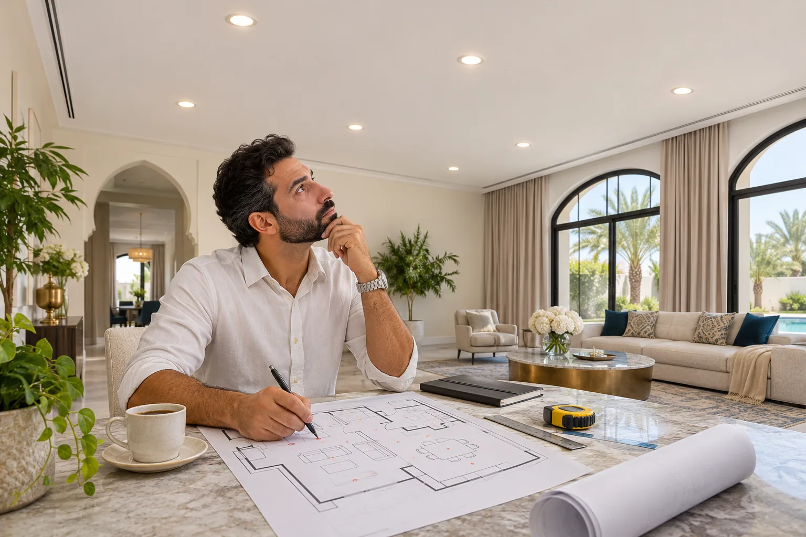

How Many Downlights Do I Need? A Simple Guide for UAE Homes
A practical starting point for planning ceiling lights in a Dubai or Abu Dhabi home, without filling every part of the ceiling with downlights.

There is no one fixed number of downlights for every room. A 20-square-metre room can need a different layout depending on ceiling height, the chosen light, the wall and floor colours, the furniture and what people do there. A useful plan starts with the room’s tasks and layout, then checks the light output and spacing of the actual fitting.
Start with how you use the room
Mark the sofa, dining table, kitchen counter, wardrobe and artwork on a floor plan. Keep strong task light where people read, prepare food or work. In a living room, downlights can provide a gentle base layer while a floor lamp or table lamp makes a reading corner more comfortable. A decorative pendant can light the dining table without needing a row of ceiling spots above it.
For a kitchen, plan light over the work surface so your body does not cast a shadow onto the counter. In a bedroom, consider bedside lights and a comfortable route to the wardrobe before deciding how many ceiling fittings to add. See our guide to layered lighting in UAE homes for ideas on combining ceiling, wall and decorative lights.
Use a spacing rule only as a first sketch
A common starting rule is to leave a little space between a downlight and the wall, then arrange the fittings evenly. Some manufacturer guides use about half the ceiling height as an initial distance between lights. That can help you draw a first layout, but it is not a building rule and it does not guarantee a good result.
The light’s beam and output matter. Eaton explains that manufacturers give a spacing value for each product; that value is used with the mounting height to find the product’s maximum spacing. Leaving too much distance between fittings can create darker patches, while placing them too close may cause glare or an overlit ceiling. Common placement rules of thumb can help you sketch a first layout, but they do not replace the product instructions or a room-specific design.
Check the light output before fixing the count
Look at the fitting’s lumens, beam spread and dimming details, not just its wattage or the size of the hole in the ceiling. A narrow beam can make bright pools on the floor. A wider beam can spread light more evenly. Dark finishes, tall ceilings and a layout with little daylight can change how bright the room feels.
For example, a designer might sketch six downlights in a 4-by-5-metre living room as a starting layout, then check the actual product data, furniture positions and the room’s brightness needs before approving the count. That example is only a sketch; another fitting or room arrangement may need fewer or more lights. A lighting calculation can help check coverage before installation.
Four mistakes to avoid
- Counting by room size alone. Room area is useful, but it cannot tell you the beam, output or task needs of each fitting.
- Putting lights in straight lines without checking the furniture. Move the layout around dining tables, wardrobes, mirrors and the edges of worktops.
- Using downlights for every job. Wall lights, pendants and portable lamps can add comfort and make the room feel less flat.
- Forgetting dimming and maintenance. Confirm that the driver and dimmer work together, and leave access for any equipment that may need service.
A simple checklist before installation
Measure the room and ceiling height. Mark furniture and work areas. Choose a specific downlight and read its beam and spacing information. Draw the layout and check it from a seated position as well as from the doorway. Confirm the dimming method and have a qualified electrician review installation requirements, especially in bathrooms and other wet areas.
If you are planning a villa, apartment or renovation in Abu Dhabi or Dubai, OMEGALUX Studio can help coordinate the ceiling layout with the rest of the lighting plan. Discuss your project with the studio ↗